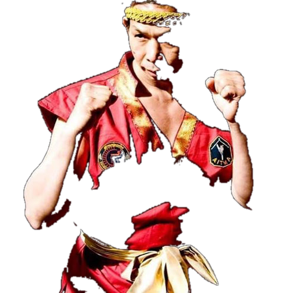
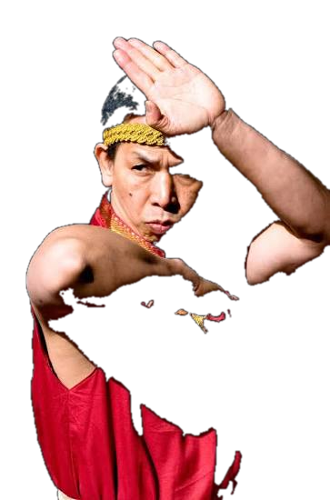
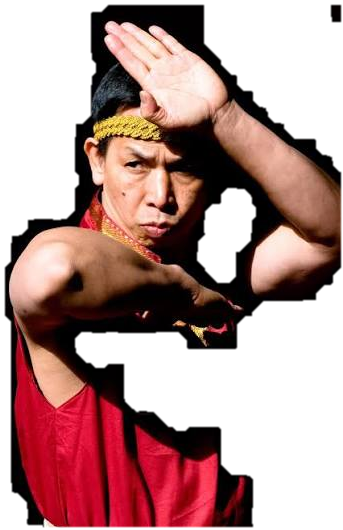

Husarmia Muay Thai
About MSA
MSA Leeds Husarmia Muay Thai is built around discipline, respect, strength and continual development in the sport.



The gym
More than a fight team.
MSA Leeds Husarmia Muay Thai provides training for beginners, regular members and competitive fighters. The gym combines structured classes with dedicated training time for fighters, students and personal development.
LocationUnit 8B Sugar Mills, LS11 7HL
DisciplineMuay Thai
First sessionFREE
PIOTRPHOTO PLACEHOLDER
A story from MSA
Piotr's Story
PIOTR INFO HERE: Add Piotr's story here — MSA's first ever client, now aged 47/48, and recently a championship winner in Thailand in his age category. Replace this placeholder with the final story and achievement details.